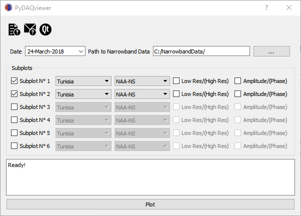
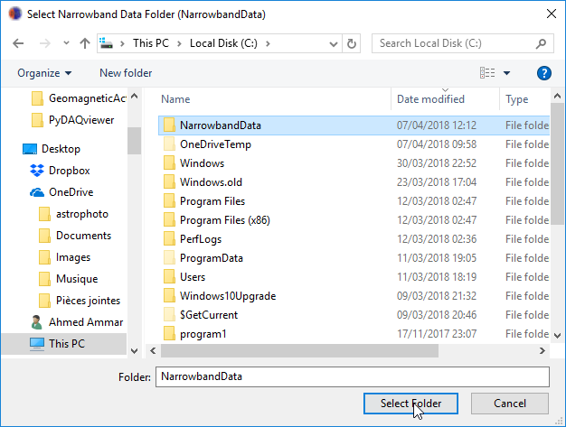
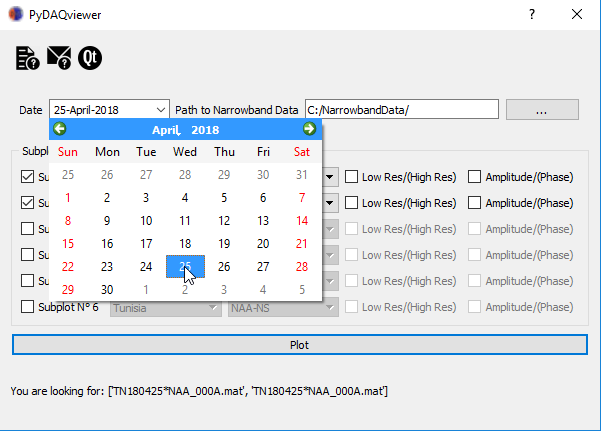
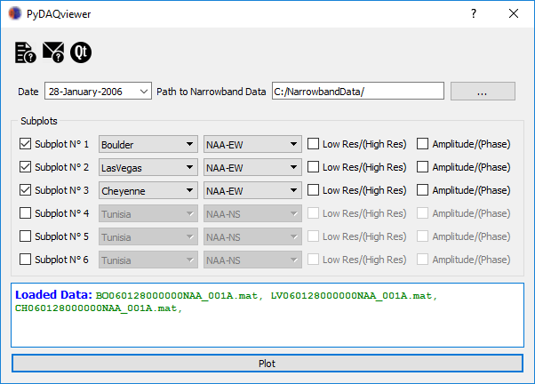
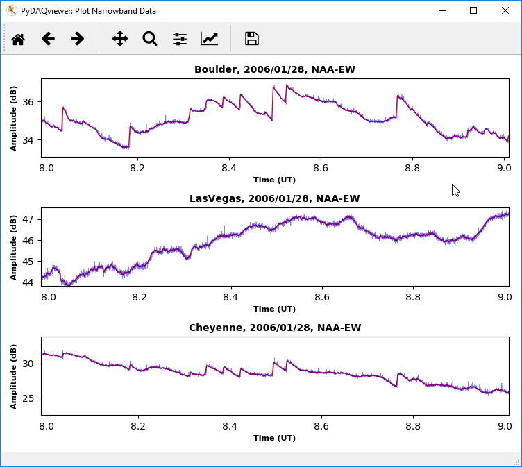

The VLF PyDAQviewer
Which Data to Plot
Narrowband data file naming convention
Folder Path Convension
SiteInfo
Reproducing the LEP Tutorial
The data are saved in a Matlab v4 format, which can be easily read in Matlab. The format consists of a header with basic information, followed by the data itself. Matlab v4 is an easy format. The specific format is detailed below, so that it is machine-readable in any digital application.
XXYYMMDDHHMMSSZZZ_ACCT.mat
'NarrowbandData/'.
Figure 1: Select NarrowbandData folder.

The path to your data will be something like: 'C:/NarrowbandData/SiteName/Year/MM/DD/' (e.g. 'C:/NarrowbandData/Tunisia/2018/03/25/'). Note that this can be on any drive root drive: C-Z including DVD drives etc, so if you burn data to a DVD burn it in the same folder and the PyDAQviewer will be able to find it.
Select date:
Figure 2: Select date of the recorded data from the calendar.

# -*- coding: utf-8 -*-
'''
Author: Ahmed Ammar, ahmed.ammar@fst.utm.tn
Purpose: Save VLF Receivers (Rx) and Transmitters (Tx) Info
Date Created: Mon Mar 12 22:23:34 2018
'''
# TODO: Add All Rx Sites
Rx_ID = {
"Tunisia":"TN",
"Algeria":"AL",
"France":"FR",
"Japan":"JP",
"New York":"NY",
"Boston":"BO"
}
# TODO: Create dictionary for Tx Sites
Tx_ID = {
"NAA-NS":"NAA_000",
"NAA-EW":"NAA_001",
"NRK-NS":"NRK_000",
"NRK-EW":"NRK_001",
"NLK-NS":"NLK_000",
"NLK-EW":"NLK_001",
"NAU-NS":"NAU_000",
"NAU-EW":"NAU_001",
"NPM-NS":"NPM_000",
"NPM-EW":"NPM_001",
"ICV-NS":"ICV_000",
"ICV-EW":"ICV_001",
"NSC-NS":"NSC_000",
"NSC-EW":"NSC_001",
"GQD-NS":"GQD_000",
"GQD-EW":"GQD_001",
"GBZ-NS":"GBZ_000",
"GBZ-EW":"GBZ_001",
"DHO-NS":"DHO_000",
"DHO-EW":"DHO_001",
"HWU-NS":"HWU_000",
"HWU-EW":"HWU_001",
"JXN-NS":"JXN_000",
"JXN-EW":"JXN_001",
"ISR-NS":"ISR_000",
"ISR-EW":"ISR_001"
}
To start edit the SiteInfo.py file to include the sites: Cheyenne, Boulder, Walsenburg, and Las Vegas (note in the SiteInfo.py file Las Vegas should be all one word: LasVegas).
Figure 3: Example working on data from LEP tutorial.

The output of this configuration is in below:
Figure 4: Generated figure.
